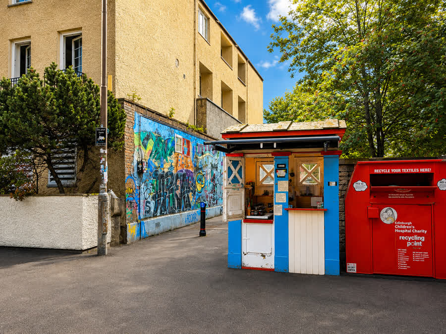

Takeaway coffee
Poured at the window of the box. Drink it on the walk through Dalry, towards Fountain Park, or along the cycle and walk way to Roseburn.



Orwell Terrace · Telfer Subway · EH11 2DD
Sam runs Pourboy coffee from the wee kiosk at the Telfer Subway. Window service, takeaway coffee, baked cookies. No seating.
Wed-Sun 10:00-17:00. Monday and Tuesday the hatch is shut.
Find the hatch
Dalry, Edinburgh, EH11 2DD. Near Fountain Park and Dalry. Short walk from Haymarket. Near the cycle and walk way to Roseburn.
Stop by while you are in Dalry or walking through the Telfer Subway. Takeaway from the window.
Neighbourhood map of the Telfer Subway and Orwell Terrace, not a private door number. Open a larger map.
The box
1930s
The city put up hundreds of these in the 1930s. A telephone, a lamp on top, a wee room for an officer on the beat.
Now
A lot of the old boxes are tiny kiosks. Coffee, flowers, tickets. This one sits on Orwell Terrace at the Telfer Subway.
Not the police
Not Police Scotland. Sam is at the hatch. Sky-blue body, white panels, red trim. You cannot miss it beside the graffiti wall.
What to get
No restaurant menu. No seating. You order at the hatch and walk on.
Poured at the window of the box. Drink it on the walk through Dalry, towards Fountain Park, or along the cycle and walk way to Roseburn.
Baked cookies sit on the hatch. Today's tray lives on Instagram, not on a printed card.
If you are nearby
Stop by while you are in Dalry, or walking through the Telfer Subway.
Visit the shop@pourboy_edinburgh
Follow @pourboy_edinburgh for the live tray and the odd closed day. A like, a comment, or an Instagram shout out helps more than you would think.